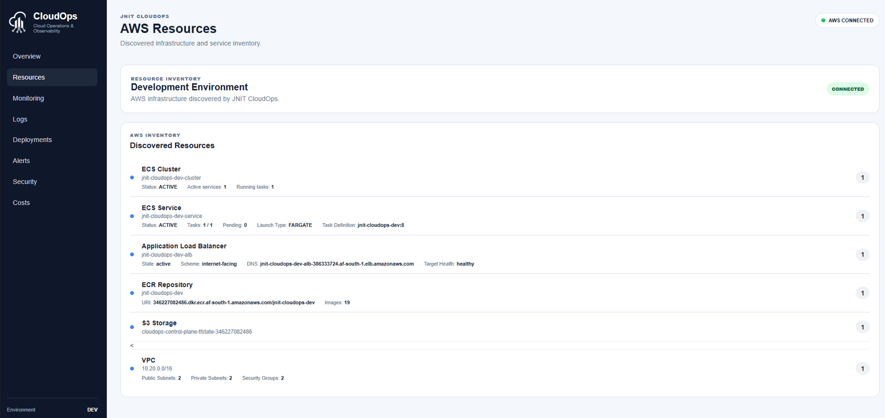
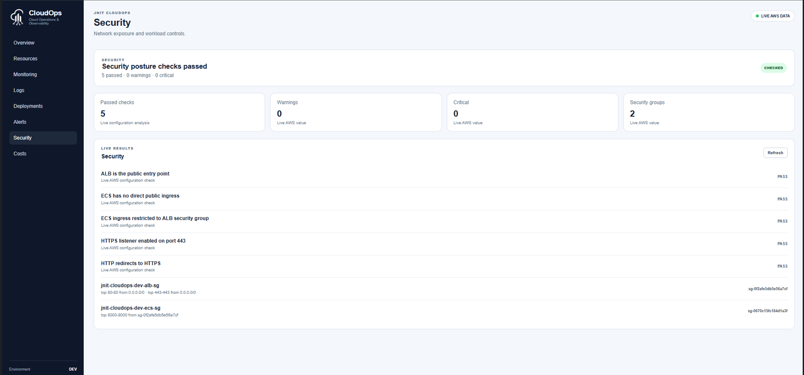
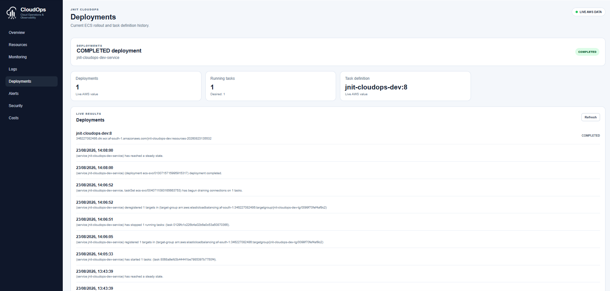
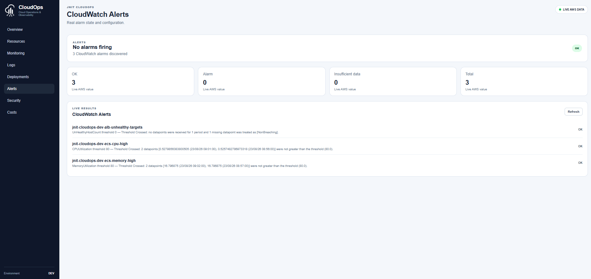
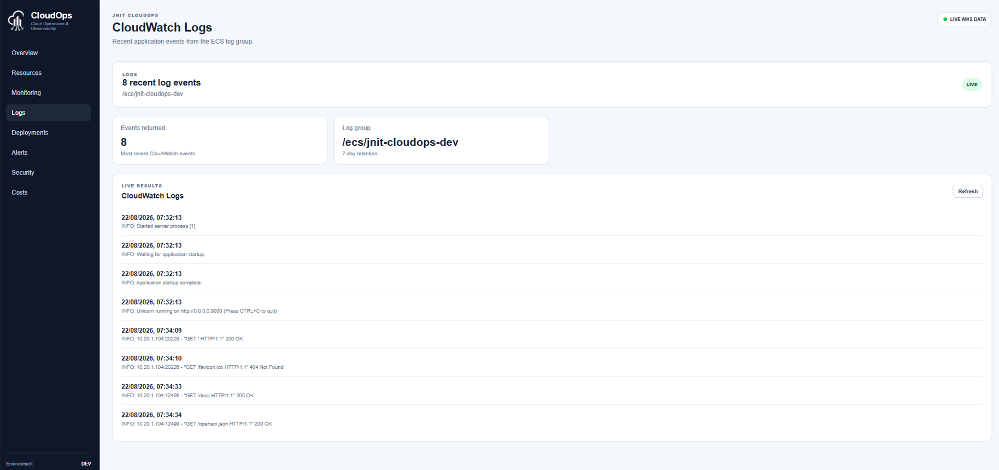
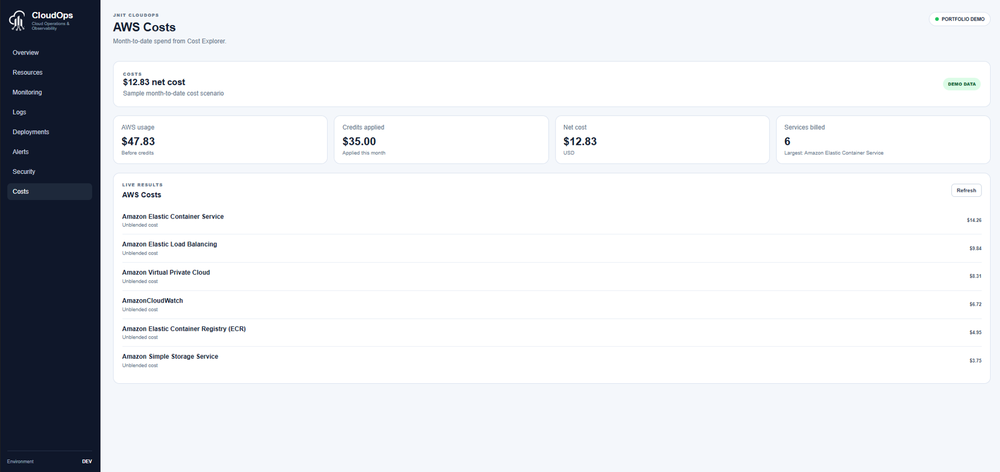
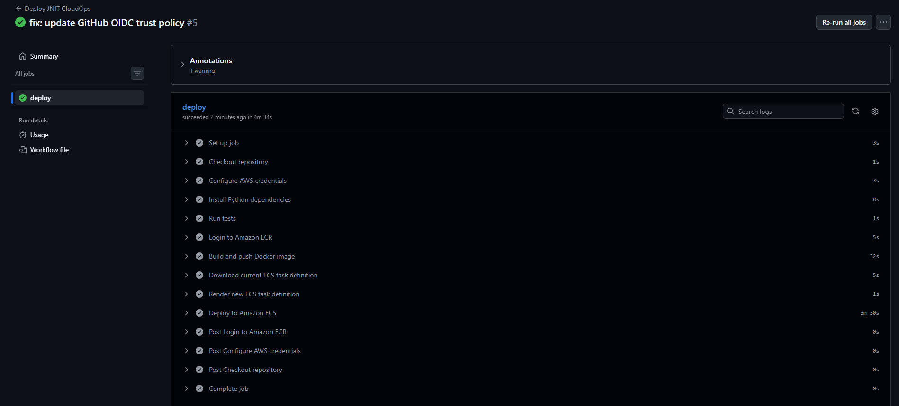
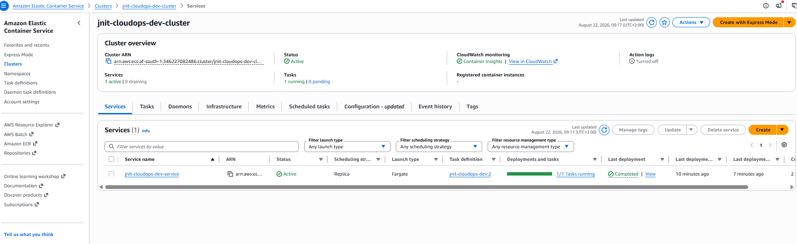
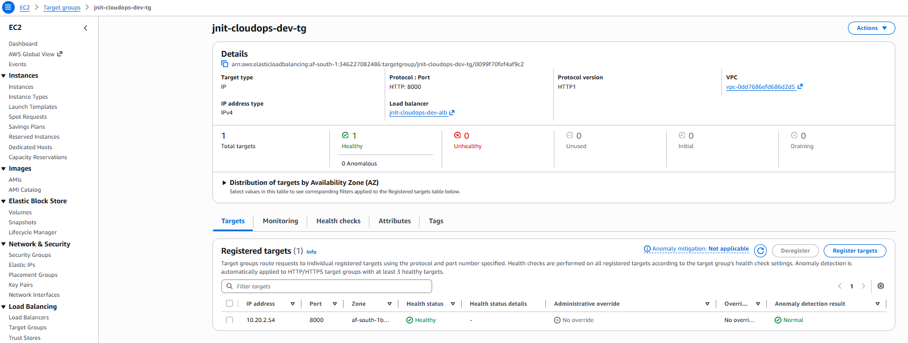

AWS CLOUD ENGINEERING CASE STUDY
JNIT CloudOps.
Operate AWS with visibility.
A cloud operations and observability platform designed, built and deployed on AWS using Terraform, ECS Fargate, GitHub Actions, CloudWatch and FastAPI.
Portfolio engineering environment. Runtime was destroyed after evidence capture to avoid ongoing costs; the screenshots document the validated deployment.
PROJECT OVERVIEW
More than a dashboard.
JNIT CloudOps was created as a practical cloud engineering project built around a real containerised AWS workload. The platform retrieves operational information directly from AWS APIs rather than displaying simulated infrastructure data.
OPERATIONS PLATFORM
AWS infrastructure made visible.
The dashboard provides a single operational view across infrastructure, workloads, deployments, security, monitoring and cost information.

PLATFORM CAPABILITIES
One view across the environment.
Each section retrieves information from AWS services through a FastAPI backend using boto3.
Resource discovery
ECS clusters and services, ALB state, ECR images, S3 resources, VPCs, subnets and security groups.
Monitoring
ECS CPU and memory utilisation together with ALB traffic, response latency and target health metrics.
CloudWatch Logs
Recent application events surfaced from the ECS log group with repetitive load-balancer health checks filtered from the dashboard view.
Deployments
ECS task-definition revisions, running workloads, rollout state and deployment events.
Alerts
Real CloudWatch alarm configuration and state for workload and target-health conditions.
Security posture
Network exposure checks confirm ALB entry, private ECS access, HTTPS and HTTP redirection.
Cost visibility
AWS Cost Explorer integration presents service usage, credits and estimated net cloud cost.
PLATFORM EVIDENCE
Built against live AWS services.
Screenshots were captured from the deployed development environment before the runtime infrastructure was intentionally destroyed for cost control.






ENGINEERING
Infrastructure, application and delivery.
CloudOps combines application development with infrastructure engineering and operational automation.
Terraform
The AWS environment is defined using reusable Terraform modules with environment separation and remote state.
- VPC and subnet architecture
- Security groups
- Application Load Balancer
- ECS Fargate
- ECR
- IAM roles and policies
- CloudWatch monitoring
- ACM and HTTPS
GitHub Actions
Application delivery uses GitHub Actions with AWS OIDC federation rather than long-lived AWS access keys.
- Automated Pytest execution
- Docker image build
- ECR image push
- ECS task-definition revision
- ECS rolling deployment
- Service stability validation
FastAPI + boto3
A Python API layer retrieves operational information directly from AWS and exposes it to the CloudOps dashboard.
- Python
- FastAPI
- boto3
- REST APIs
- JavaScript
- Chart.js
DEPLOYMENT EVIDENCE
From Git commit to running workload.
The application was containerised, delivered through CI/CD and validated against live AWS infrastructure.



AWS ARCHITECTURE
Public edge. Private workload.
Internet traffic terminates at the Application Load Balancer. ECS Fargate runs inside private subnets and accepts application traffic only from the ALB security group.
PUBLIC
Internet
→
DNS
Route 53
→
HTTPS :443
Application Load Balancer
→
PRIVATE :8000
ECS Fargate
AWS
Terraform
ECS
Fargate
ECR
ALB
VPC
IAM
CloudWatch
Route 53
ACM
GitHub Actions
Docker
FastAPI
Python
SECURITY DESIGN
Security built into the architecture.
The workload is not directly exposed to the public internet. Network access is enforced through security-group relationships and HTTPS terminates at the ALB.
ALB is the public entry point
Public traffic does not connect directly to ECS.
ECS has no direct public ingress
The application workload remains private.
Security-group restricted access
ECS accepts application traffic from the ALB SG.
HTTPS enabled
ACM-backed HTTPS listener operates on port 443.
HTTP redirects to HTTPS
Port 80 requests are redirected securely.
CLOUD COST MANAGEMENT
Rebuild when needed.
Destroy when idle.
JNIT CloudOps is a portfolio and engineering environment, so the AWS runtime is not left running continuously.
After deployment validation and evidence capture, the development environment was intentionally destroyed using Terraform to prevent unnecessary cloud charges.
The infrastructure remains reproducible from Infrastructure as Code and can be recreated when additional development or demonstration work is required.
CLOUD ENGINEERING
Need practical AWS engineering?
JNIT combines infrastructure design, automation, application development and operational visibility into maintainable cloud solutions.
Start a conversation →